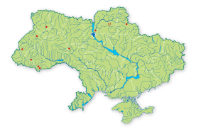
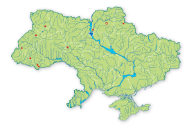

Таксономічна належність: Клас — Ссавці (Mammalia), ряд — Парнокопитні (Artiodactyla), родина Порожнисторогі (Bovidae). Один з 2-х видів роду, один вид в фауні України.
Природоохоронний статус виду: Зниклий у природі.
Ареал виду та його поширення в Україні: Історичний ареал виду від Піренеїв для Зах. Сибіру, Англія і пд. Скандинавія. В Україні на початку 1990-х рр. утримувалося 10 популяцій у Волинській, Київській, Чернігівській, Сумській, Львівській, Івано-Франківській, Чернівецькій та Вінницькій обл. Зараз зубр зберігся скрізь, крім Чернігівської обл.
Чисельність і причини її зміни: Вид, чисельність якого в усіх країнах крім України, росте рік від року.З 1965 по 1967 рр. в Україну було завезено 41 особина. Максимальна чисельність в 1990 р. — 685 голів. На 2008 р. поголів’я зменшилося більш ніж в три рази і зараз становить менше 200 зубрів.
Причини зміни чисельності: браконьєрство і недбале ведення мисливського гос подарства.
Особливості біології та наукове значення: Традиційно вид, що здійснював величезні міграції, зараз веде осілий спосіб життя. Тримається невеликими сім’ями або стадами (до 50 особин). Старі самці живуть поодинці, пристають до гурту лише під час гону. Живиться травою, листям, пагонами і гілками дерев та чагарників, корою, а також добре їсть сіно. Статевої зрілості самець досягає у 2–3-річному віці, а самка у 2-річному. Гін у серпні–вересні. Самка раз на рік після 9-місячної вагітності народжує одне, рідко двох малят. Лактація триває 8–10 місяців. Рівнині та гірські ліси (переважно листяні і мішані, з вирубками, луками та болотами). Виходить на сінокоси та ін. сільськогосподарські угіддя.
Морфологічні ознаки: Величезний бик. Довжина тіла більш ніж 3 м, в плечах до двох метрів, маса до 1 т. Волосся темно-коричневе. Голова опущена, з вираженою «бородою» і двома відносно невеликими рогами.
Режим збереження популяцій та заходи з охорони: Вид занесений до І і ІІ видань ЧКУ (1980, 1994), а також як вид, існуванню якого можлива загроза, до Червоної книги МСОП як вид, що підлягає охороні, до ІІІ додатку до Бернської конвенції. Охороняється в мисливських господарствах. Потребує спеціальної охорони, а також наукової програми відтворення, яка передбачала би поповнення українських популяцій.
Розмноження та розведення у спеціально створених умовах: Розмножується добре. Практично все сучасне поголів’я походить від тварин, яких розводять в неволі з 1929 р.